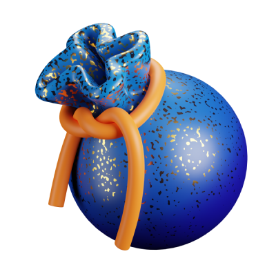
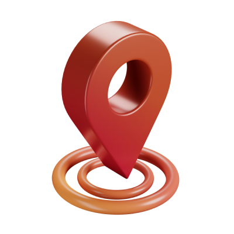

Tomadas de lo que muestran scrolltide, glass (samasante), supahero, refero styles, cta.gallery, navbar.gallery, footer.design y 3dicons. Cada una tiene una pantalla de inicio (escritorio) y la pantalla de una parcela (celular). La imagen satelital es real: Sentinel-2 del Chaco salteño. Elegí una y la llevo a todas las pantallas.
La imagen satelital ocupa toda la pantalla, oscura y con grano, y los datos flotan encima en paneles de vidrio. Se ve desde lejos: monte oscuro contra lotes desmontados. Tipografía Geist, acento lima clorofila.
Dejás AVAX en un contrato. Cada mes una imagen satelital confirma la parcela y el contrato paga a quienes la cuidan. Si aparece un desmonte, se corta.
backdrop-filter.Papel claro, tinta oscura y una serif grande (Instrument Serif) con texto en Inter. Parece un informe de campo o una fundación seria: transmite confianza a un donante o a una empresa. Logotipo gigante en el pie.
Un contrato en Avalanche guarda tu aporte. Cada mes, una imagen Sentinel-2 confirma que la parcela sigue entera y el contrato paga a quienes la cuidan. Si hay desmonte, los pagos se cortan.
Tarjetas grandes y redondeadas, verde profundo con lima eléctrico y la tipografía Bricolage Grotesque. Usa íconos 3D de 3dicons (CC0): pin, bolsa de plata, escudo, medalla y hacha. Se siente como una app de consumo: amable para el jurado que la usa desde el celular.
Cada mes que el satélite confirma que la parcela sigue en pie, el contrato paga a quienes la cuidan. Si hay desmonte, se corta.
Elegir una parcela →

del monte de 2024 · 214 ha